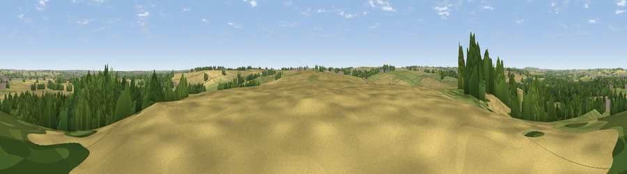

Viewpoint near Bugbrooke
#31433 in England · top 42% of its area beats it · near BugbrookeThe view, rendered

A 360° render of this exact spot computed from the terrain model, tree cover and land cover — summer colours, afternoon light, calibrated against photographs of famous viewpoints. Real trees, hedges and buildings will differ in detail.
The panorama
Grey silhouette: terrain skyline in each direction (720 bearings, Earth curvature and refraction included). Dashed green: skyline with trees (+15 m) and buildings (+8 m) as obstacles. Blue strip: how far the ground is visible on each bearing.
Where the view opens
Wedge length = distance to the farthest visible ground on that bearing (vegetation-aware). Rings at 10, 25 and 50 km.
What fills the view
45% cropland · 31% grassland · 20% woodland · 3% built-up
Angular shares of the visible panorama (visual magnitude), not map area. Landscape diversity 0.51 (0–1 Shannon).
Key numbers
More beautiful places nearby
The staircase of upgrades: each row has a higher view potential than everything closer. Driving times are estimates from straight-line distance, calibrated against real road routing — check an actual route before setting out.
| Place | Direction | Drive | Score |
|---|---|---|---|
| Upper Stowe Mount | W · 3 km | ~8 min | 43.7 |
| Potcote Hill | SSW · 4 km | ~9 min | 44.2 |
| Glassthorpe Hill | NNW · 5 km | ~11 min | 44.9 |
| Viewpoint near Everdon | W · 11 km | ~20 min | 46.6 |
| Preston Capes Hill | W · 12 km | ~22 min | 47.4 |
| Viewpoint near Newnham | WNW · 12 km | ~22 min | 55.6 |
| Viewpoint near Norton | NW · 12 km | ~22 min | 56.8 |
| Viewpoint near Staverton | WNW · 14 km | ~25 min | 63.3 |
52.19644, -1.00180 · source: screening · position refined by local search. Computed location — check access rights before visiting.